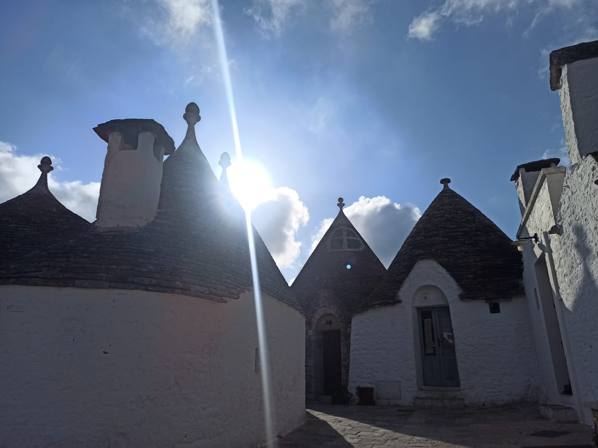

Bienvenidos a una colección de momentos capturados durante mis viajes
por todo el mundo. Desde bulliciosas ciudades hasta paisajes serenos,
cada foto cuenta una historia de aventura, descubrimiento y asombro.
Desplázate hacia abajo y deja que la magia de viajar se despliegue ante
tus ojos.

Fotos by RaimonFotos by RaimonFotos by RaimonFotos by RaimonFotos by RaimonFotos by RaimonFotos by RaimonFotos by RaimonFotos by RaimonFotos by RaimonFotos by RaimonFotos by RaimonFotos by RaimonFotos by RaimonFotos by RaimonFotos by RaimonFotos by RaimonFotos by Raimon